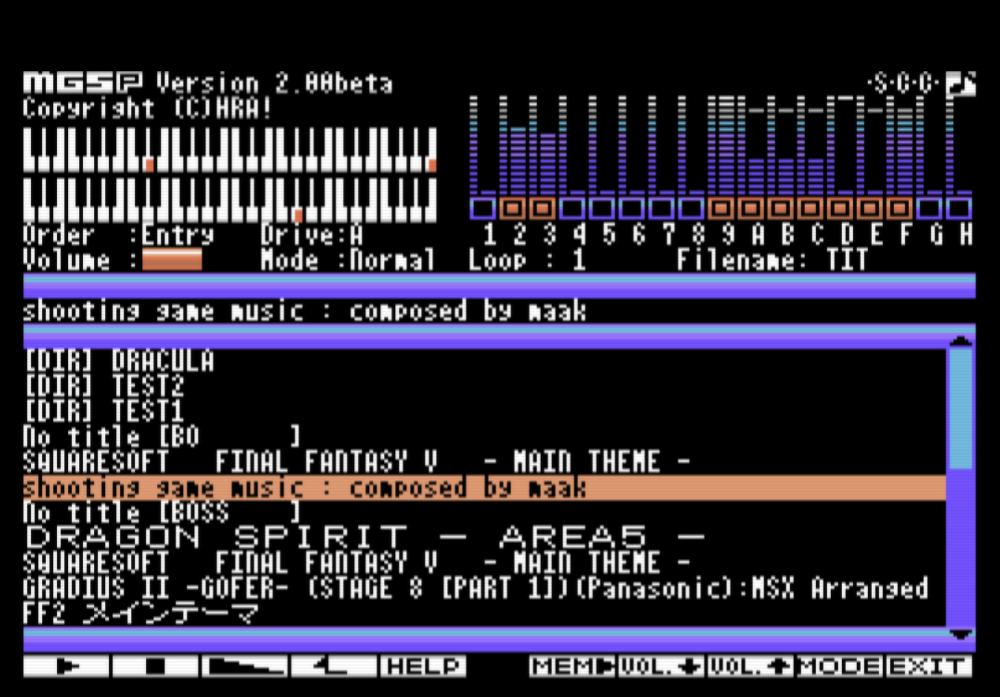

MGSプレイヤー MGSP v2.1.3 [English]

MGSP v2.1.3 DOS2版 [2021年2月9日 9:15PM 更新]
MGSP v2.1.2 ROM版 [2021年1月23日 6:20AM 更新]
MGSP v2.0.0 取扱説明書
必要環境(DOS2版):
MSX-DOS2 または Nextor が動作する MSX実機またはエミュレータ
MGSDRV v3.20以降 (v3.20より前のバージョンは、動作するかもしれませんが未確認です。)
MemoryMapper対応RAM 224KB以上
MSX-MUSIC/SCCがあるとそれらを利用した演奏も可能になります。
必要環境(ROM版):
MSX実機またはエミュレータ
RAM64KB以上
MSX-MUSIC/SCCがあるとそれらを利用した演奏も可能になります。
※この ROMを SLOT1 へ、SCC搭載ゲームカートリッジを SLOT2 へ装着すると、ゲームカートリッジ内のSCCを利用することが出来ます。
[参考][外部リンク] MGSDRV
概要:
MGSDRV を常駐させている状態で機能する MGSファイルプレイヤーです。
Ain様の MGSEL とほぼ同じ目的のソフトですが、下記の点が異なります。
MGSELとの違い
(長所) MSX1 でも動作する
(長所) 漢字ROMがなくても曲名を漢字カナ交じりで表示できる
(長所) ジョイパッドで操作できる
(短所) MapperRAMをたくさん消費する
(短所) マウスでは操作できない
(短所) MGSELにはあるが MGSPには無い機能が多数ある
使い方(MGSP v2.1.0):
コマンドプロンプトから下記のコマンドを実行してください。MGSDRVの常駐や、MAINROMPの実行は不要です。
A:¥> MGSP
※MGSDRV.COM と KFONT.BIN が MGSP.COM と同じディレクトリに存在する必要があります。
※MGSP.INI があると、そこに記載の設定に従って、ちょっとだけカスタマイズ出来ます。
Keyboad
Joypad
番外編：
[フロッピーディスクラベルを作成]
エミュレーターで実行する手順：
[BlueMSXで実行する手順]
MGSP画像素材:
[MGSP画像素材データ]
[MGSPカートリッジラベルデータ]
補足:
昨今、NextorDOS + MapperRAM なコンボカートリッジが流通しており、
以前よりも 64KBを越える MapperRAM の利用の敷居が下がってきている印象を受けます。
一方で漢字ROMの入手は厳しい状況になってきているので、MapperRAM を利用して漢字を使えるようにしたらどうか。
MSX1 でも動くようにしたらどうか。というのが作り始めたきっかけです。
MSX1 の方がバリエーションに富んだ本体も多いので、あえて MSX1 を好んで使っている方もいると思いますが、
MGSPを作ったことによって、MSX1ユーザーにも MGSDRV による素晴らしい演奏の世界を楽しめるように、間口を広げるお手伝いが出来たかな
と考えています。
MSX2ユーザーであっても、MGSELだと漢字ROMが無くて曲名が■になってしまう、なんてケースはあったので、
そういった方々にも、利便性向上に貢献できたかなと考えています。
漢字ROM搭載のMSX2/2+/turboRユーザーさんは、MGSEL/MGSP のお好きな方を使って頂ければ幸いです。
その他(ソースファイルなど):
[Other contents]